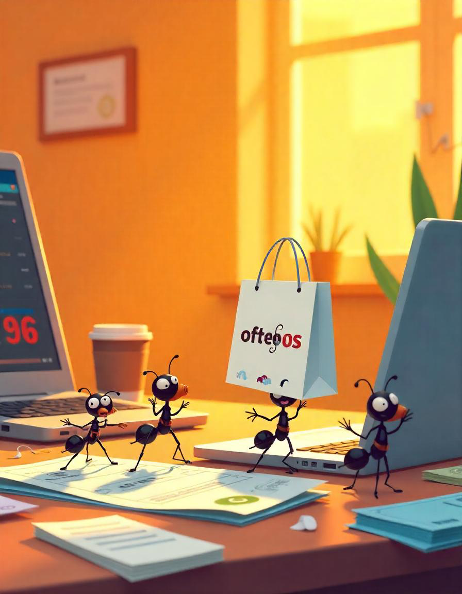

Errores comunes en las finanzas personales
Errores financieros comunes que todas hemos cometido (y cómo evitarlos)
Todas en algún momento hemos cometido errores financieros sin darnos cuenta. Desde esos pequeños gastos que parecen insignificantes hasta decisiones más grandes que afectan nuestra estabilidad económica. Lo importante es aprender de ellos y encontrar formas de mejorar nuestra relación con el dinero. Aquí te contamos algunos de los errores más comunes y cómo evitarlos.
Gastos hormiga
Esos cafecitos diarios, las suscripciones que ya no usamos o las compras por impulso pueden parecer inofensivos, pero cuando sumamos el gasto mensual, nos damos cuenta de que afectan nuestras finanzas. ¿Cómo evitarlo? Lleva un registro de tus gastos, revisa tus suscripciones y establece un presupuesto para pequeños gustos sin que se conviertan en un problema.
No tener un fondo de emergencia
Vivimos en un mundo impredecible y no tener ahorros para imprevistos puede llevarnos a endeudarnos más de la cuenta. ¿Cómo evitarlo? Empieza con una meta pequeña, como ahorrar el equivalente a un mes de gastos esenciales, y poco a poco ve aumentando esa cantidad.
Usar la tarjeta de crédito como dinero extra
Las tarjetas de crédito pueden ser herramientas útiles si se usan correctamente, pero también pueden convertirse en una trampa si las vemos como una extensión de nuestros ingresos. ¿Cómo evitarlo? Usa la tarjeta solo para compras planificadas y paga el total del saldo antes de la fecha de corte para evitar intereses.
No llevar un presupuesto
Muchas veces gastamos sin darnos cuenta en qué se va nuestro dinero. Sin un plan financiero, es fácil terminar el mes con la cuenta en ceros. ¿Cómo evitarlo? Crea un presupuesto mensual y asigna un porcentaje de tu ingreso a gastos, ahorro e inversiones.
No pensar en el futuro (ni en la jubilación)
Creemos que tenemos toda la vida por delante, pero cuanto antes empecemos a planear nuestra seguridad financiera, mejor estaremos a largo plazo. ¿Cómo evitarlo? Empieza a invertir en un fondo de retiro o ahorro a largo plazo. Mientras antes empieces, menos esfuerzo tendrás que hacer en el futuro.
No comparar precios ni investigar antes de comprar
Comprar sin investigar opciones puede hacer que gastemos más de la cuenta en productos o servicios que podrían costarnos menos. ¿Cómo evitarlo? Antes de hacer una compra importante, compara precios, busca ofertas y revisa opiniones para tomar la mejor decisión.

No diversificar las fuentes de ingreso
Depender de un solo ingreso puede ser riesgoso, especialmente si enfrentamos una crisis económica o perdemos nuestro empleo. ¿Cómo evitarlo? Busca formas de generar ingresos extra, como un negocio propio, inversiones o trabajos freelance.
Endeudarse para mantener un estilo de vida
Muchas veces sentimos la presión de gastar más de lo que podemos para mantener un estilo de vida que no es sostenible.
¿Cómo evitarlo? Vive de acuerdo con tus ingresos y prioriza tu estabilidad financiera antes que las apariencias.